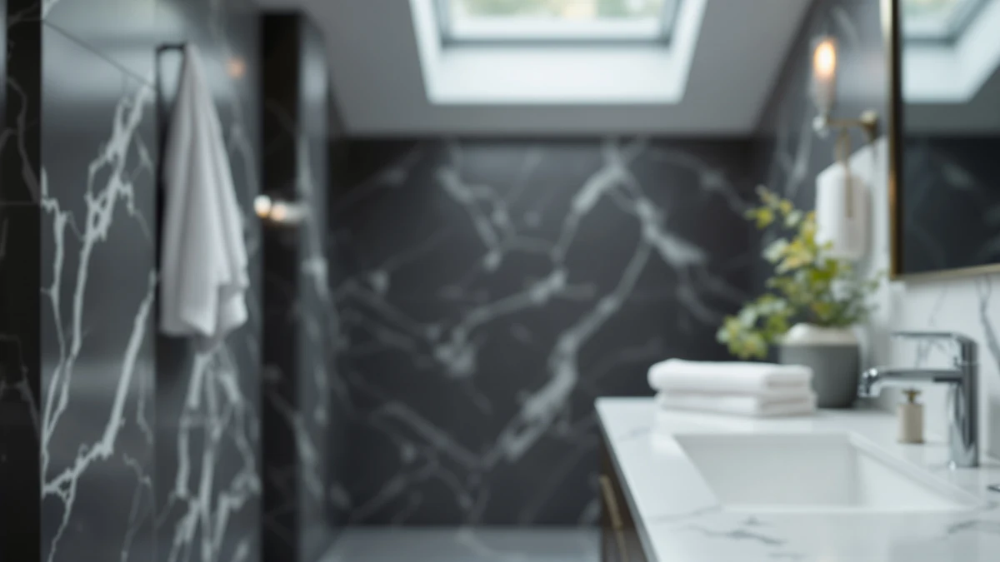

How to Clean New Bath Towels: Complete Guide (2026)
Prices and picks verified as of October 2026. Independent, reader-supported reviews.


Things to Know Before You Buy
- New towels carry a factory finish called sizing that repels water instead of absorbing it, so the first wash matters more than any wash that follows.
- Skip fabric softener on the first wash and every wash after. It coats cotton fibers in a waxy film that blocks absorbency.
- A half-cup of white vinegar in the first wash strips the factory coating and helps set the dye, so colored towels bleed less in later loads.
- Hot water works best for the first wash of plain cotton towels. Check the care label first if the towels are blended with a synthetic fiber.
- One wash is usually enough, but a second detergent-free cycle fixes towels that still feel slick or repel water afterward.
Knowing how to clean new bath towels before their first use matters more than most people expect, because every towel leaves the factory coated in a finishing agent called sizing. That finish keeps towels looking crisp on a store shelf, but it also keeps them from soaking up water once you get them home. Skip that first wash and you end up with a towel that smears beads of water across your skin instead of drying it, no matter how many loops its terry weave has.
The fix takes one extra wash cycle and a few household staples you likely already own. Run the towels through a vinegar-only cycle to strip the coating, wash again with a light dose of detergent, then dry on medium heat, and the towels come out ready to actually do their job. The five steps below also work as a reset for towels that have gone stiff or stopped absorbing well after months of regular use.
What You'll Need
- Supplies: white distilled vinegar, fragrance-free liquid detergent, baking soda (optional booster)
- Tools: washing machine, clothes dryer
Step 1: Check the care label and separate colors
Before anything touches the washing machine, read the care label stitched into the seam. Most pure cotton towels tolerate hot water and standard detergent, but towels blended with bamboo rayon or microfiber often need a cooler cycle to avoid shrinking or pilling. The label also tells you whether the manufacturer already pre-washed the fabric, which is common on a handful of premium sets and changes how aggressive your first wash needs to be.
Sort the towels by color before loading the machine, even if you bought a matching set. New dye hasn't been through a wash cycle yet, and dark colors like navy or charcoal can bleed onto cream or white towels in the same load. Wash dark colors separately for the first two or three cycles until the rinse water runs clear.
Cut off any manufacturer tags and remove plastic clips or cardboard bands before loading the drum. Leaving them on risks tangling the towels or scratching the washer's interior, and the towels wash more evenly once they can move freely.
Step 2: Run a vinegar-only wash to strip the factory coating
Load the towels into an otherwise empty washer and set it to the hottest water temperature the care label allows. Pour two cups of white distilled vinegar directly into the drum or detergent dispenser, and skip detergent completely for this cycle. Vinegar's acidity breaks down the sizing, a starch-and-wax finish manufacturers apply so towels look smooth and crisp on a store shelf, but it also happens to block the fibers from absorbing water.
This step is the one most people skip, and it's the one that actually matters most. A towel can look identical in the package whether or not it carries this coating, so there's no visual cue telling you it's needed. Run the full cycle, including the rinse, before moving on to step three.
Don't worry about the vinegar smell lingering. It rinses out completely during the cycle and won't carry over once the towels are dry.
Step 3: Wash again with a light detergent dose in hot water
Run the towels through a second wash, this time with your regular detergent measured at about half the dose the bottle suggests. Full-strength detergent amounts are calibrated for heavily soiled laundry, and brand-new towels with no dirt on them don't need that much. Excess detergent that doesn't fully rinse out becomes the same kind of residue that slowed absorbency in the first place.
Skip fabric softener entirely, on this wash and on every wash after. Softener works by coating fibers in a waxy film that feels smooth to the touch, but that same film is what repels water. A towel treated with softener a few times starts sliding across wet skin instead of soaking it up, undoing the work the vinegar cycle did.
Use hot water again if the care label allows it. Hot water helps the detergent dissolve fully and rinses cleaner than warm or cold cycles, which matters more on this load than on everyday towel washing.
Step 4: Dry on medium heat and shake out the towels first
Shake each towel out fully before tossing it in the dryer. New terry loops are often compressed flat from sitting folded in packaging, and a hard shake helps them stand back up so they fluff properly instead of drying matted down.
Dry on medium heat rather than the highest setting, even though high heat finishes faster. New cotton fibers haven't been through a wash-and-dry cycle yet, and the combination of a brand-new weave and maximum heat is a common cause of the slight shrinkage some buyers notice after the first wash. Medium heat gets towels fully dry without that risk.
Pull the towels out as soon as the cycle ends rather than leaving them to sit in the drum. Towels left bunched up in a warm dryer for hours can develop a musty smell before they've even been used once, which defeats the purpose of cleaning them in the first place.
Step 5: Repeat the wash if towels still repel water
Test the towels before putting them into regular use. Drip a few drops of water onto the surface. Water that soaks in within a second or two means the towels are ready. Water that beads up and sits on top means some of the factory coating is still there.
Thicker towels, especially ones with a dense pile or a waffle weave, sometimes need a second vinegar-only cycle to fully shed the coating. This isn't a defect. Denser weaves simply hold more of the original finish per towel, and one wash doesn't always reach every fiber.
Once a towel passes the water-drop test, it's ready for daily use. From here, the long-term care routine is simpler: wash every three to four uses, skip the fabric softener for good, and dry on medium heat, and the towels will keep absorbing well for years instead of only the first few months.
Common Mistakes to Avoid
The most common mistake in learning how to clean new bath towels is skipping the vinegar wash entirely and going straight to detergent. Detergent alone doesn't fully break down the factory sizing, so towels come out of a normal first wash looking clean but still repelling water underneath.
Using fabric softener on new towels undoes the entire process. It's an easy habit to fall into since softener is marketed for making fabric feel soft, but on towels it coats the fibers in a film that blocks absorbency rather than helping it. Reach for vinegar in the rinse instead if softness is the goal.
Washing a full load of mixed laundry with new towels is another frequent error. New towels shed loose lint heavily during their first few washes, and that lint ends up embedded in whatever else shares the load. Wash new towels alone for at least the first two cycles.
Drying on the highest heat setting to save time can shrink or stiffen fibers that haven't been through a wash cycle yet. Medium heat takes a little longer but protects the weave.
Finally, don't assume a single wash is always enough. Thicker and denser towels sometimes need a repeat cycle, and skipping the water-drop test means you won't find out until you're standing wet in the bathroom.
Our Top Picks
If you're shopping for a first set rather than salvaging an old one, these three towels are worth starting with. Each one is simple enough that a vinegar wash and a light detergent cycle, using the steps above, is all it takes before the towels perform at their best.

Editor's Pick
Lane Linen Luxury Bath Towels
A dense cotton towel that reviewers say reaches full absorbency fast once it's been through its first wash, with little lint shed afterward.
$27.99
Check Price on Amazon
Best Value
Maisonette Loft 100% Egyptian Cotton
Egyptian cotton that owners report keeps a plush, towel-store feel even after the stripping wash this guide recommends for new towels.
$67.35
Check Price on Amazon
Premium Choice
Utopia Towels 8 Pack Towel
An eight-piece set priced for households that want enough towels in rotation to always have one clean while the rest air out between washes.
$23.99
Check Price on AmazonFrequently Asked Questions
Do you need to wash bath towels before using them for the first time?
Yes. New towels carry a factory finish called sizing that keeps them looking smooth in the package but also repels water, so a towel used straight out of the bag won't absorb well until that coating is washed out.
What's the best way to wash new towels so they don't bleed color?
Wash new towels of a single color together and keep dark colors separate from light ones for the first two or three cycles. Adding a half-cup of white vinegar to the first wash also helps set the dye and reduces bleeding in later loads.
Can you use fabric softener on brand-new bath towels?
Skip it. Fabric softener coats cotton fibers in a waxy film that blocks absorbency, which is the exact problem the first wash is supposed to fix. Use white vinegar in the rinse instead if you want softness.
Why do new towels feel stiff right out of the package?
Stiffness comes from the same sizing finish that repels water, plus the compression of being folded tightly in packaging. A vinegar wash followed by a shake-out before drying resolves most of the stiffness within the first cycle.
How many washes does it take before new towels absorb water properly?
Most towels are fully absorbent after one vinegar wash followed by a detergent wash. Thicker or densely woven towels sometimes need a second vinegar cycle, which you can confirm with a simple water-drop test on the towel's surface.
Verdict
Learning how to clean new bath towels comes down to one extra wash most people skip. A vinegar-only cycle strips the factory sizing that keeps towels crisp on the shelf, a second light wash without fabric softener finishes the job, and medium heat in the dryer protects fibers that haven't been through a cycle yet. That's the whole process, and it costs about five dollars in supplies you probably already have.
If you're starting with a fresh set rather than rescuing an old one, Lane Linen's cotton towels respond well to this routine. Reviewers note they reach full absorbency fast once they've had their first proper wash, and the dense weave sheds less lint afterward than thinner alternatives. Run any new towel, Lane Linen or otherwise, through the five steps above before its first use, and it will dry you off the way it's supposed to from day one instead of smearing water around for the first few weeks.